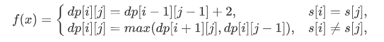
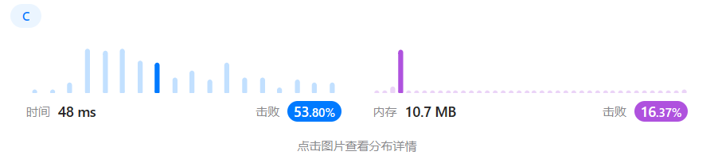

算法分析
汇报人：XXX
贪心算法
题目描述
402. 移掉 K 位数字【中等】
给你一个以字符串表示的非负整数 num 和一个整数 k ，移除这个数中的 k 位数字，使得剩下的数字最小。请你以字符串形式返回这个最小的数字。
示例 1 ：
输入：num = "1432219", k = 3
输出："1219"
解释：移除掉三个数字 4, 3, 和 2 形成一个新的最小的数字 1219 。示例 2 ：
输入：num = "10200", k = 1
输出："200"
解释：移掉首位的 1 剩下的数字为 200. 注意输出不能有任何前导零。示例 3 ：
输入：num = "10", k = 2
输出："0"
解释：从原数字移除所有的数字，剩余为空就是 0 。提示：
1 <= k <= num.length <= 105num仅由若干位数字（0 - 9）组成- 除了 0 本身之外，
num不含任何前导零
解题思路：
思想一（暴力破解）：
- 当需要删除数字长度等于数字字符长度时 == > 直接返回
"0" - 当数字字符中存在逆序数字时 == > 从前往后删除造成逆序的逆序数
- 当删除所有逆序数字时，还不满足要删除个数时 == > 从后往前删除，即删除最大数字
思想二（贪心算法）：
方法一所使用循环遍历整个数组的开销 + 移动数组的开销 ==> O(n^2) 级别，开销过大
改进办法：采用堆栈优化移动数组的时间开销
- 将每次访问的数字（该数字大于等于堆栈中最顶部的元素）存入栈中
- 当每次访问的数字（该数字小于堆栈中最顶部的元素）则从堆栈中弹出最顶部元素，并继续进行比较
- 当处理完整个数组后，如果此时需要删除字符的个数仍未满足，则将 top 值改为还需要删除的个数
- 当最终完成删除字符个数后
- 判断该数组是否为空，为空则返回 0
- 当该数组以 0 开始时则返回第一个非 0 位置的元素地址。
- 全为 0 则只需返回含有一个 0 元素的字符数组
头文件及宏
所使用头文件：
项目中所定义的宏：
# define IS_INVERSE(X,Y) (X > Y ? 1 : 0)
# define INDEX_CORRECT(I) (I = I < 0 ? 0 : I)
// improve
# define POP_STACK stack[top --]
# define PUSH_STACK stack[top ++] = num[i]执行函数：
int execRemoveKdigits() {
// char num[] = "1432219", k = 3;
// char num[] = "10200", k = 1;
// char num[] = "9", k = 1;
// char num[] = "100", k = 1;
// char num[] = "112", k = 1;
// char num[] = "1234567890", k = 9;
char num[] = "10001", k = 4;
char* res = removeKdigits(num, k);
printf("the minmum number is %s\n", res);
return 0;
}函数主体
void removeKdigit(char* num, int index, int length) {
for (; index < length - 1; ++ index) {
num[index] = num[index + 1];
}
num[length - 1] = '\0';
}
char* removeKdigits(char* num, int k) {
int len_s = strlen(num), temp = k;
// when the num length is 1 and the remove number is the same as length of num
if (len_s == k) {
num[0] = '0';
return num;
}
// when the num contain inverse order
for (int i = 0; i < len_s - 1 && temp > 0; ++ i) {
INDEX_CORRECT(i);
if (IS_INVERSE(num[i], num[i + 1])) {
removeKdigit(num, i, len_s - k + temp);
i -= 2; temp --;
}
}
// when the num not contain inverse order
// then remove the last one
if (temp > 0) {
num[len_s - k] = '\0';
}
// judge the num is start at 0 or the num is ""
if (strcmp("", num) == 0) { // the num is ""
num[0] = '0'; num[1] = '\0';
} else if (num[0] == '0' && num[1] != '\0') { // the num is like "0123" not like "0"
int move_step = 0;
while (num[move_step] == '0' && len_s - k > move_step + 1) {
move_step ++;
}
num = &num[move_step];
}
return num;
}时间空间复杂度：
空间复杂度分析：临时变量的开销；共 4 = = > O(1)
时间复杂度分析：
- 最优情况：
n = k，(n表示数字字符长度，k表示要删除字符个数) 即数字字符长度等于要删除字符的长度- 例如：
num = "123"，k = 3（num 表示数字字符） - 时间复杂度为 O(1)
- 例如：
- 最坏情况：
n = k - 1且最后一个字符小于其前面所有字符 (n表示数字字符长度，k表示要删除字符个数)- 例如：
num = "1234567890", k = 9(num 表示数字字符) - 时间复杂度：O(n2)
- 例如：
- 平均情况：O(n2)
提交截图：

优化版本：
// the remove number must be the ordered
// greed
char* removeKdigits_i(char* num, int k) {
int len_s = strlen(num), top = 0;
char* stack = malloc(sizeof(len_s));
for (int i = 0; i < len_s; ++ i) {
while (k > 0 && top > 0 && stack[top - 1] > num[i]) {
POP_STACK;
k --;
}
PUSH_STACK;
}
top -= k;
if (top == 0) {
stack[0] = '0'; stack[1] = 0;
} else {
int move_step = 0;
while (stack[0] == '0' && move_step < top - 1) move_step ++;
stack = &stack[move_step];
stack[top - move_step] = 0;
}
return stack;
}时间空间复杂度：
空间复杂度分析：临时变量的开销；共 n + 4 = = > O(n)
时间复杂度分析：O(n)
提交截图：

动态规划
题目描述
516. 最长回文子序列【中等】
给你一个字符串
s，找出其中最长的回文子序列，并返回该序列的长度。子序列定义为：不改变剩余字符顺序的情况下，删除某些字符或者不删除任何字符形成的一个序列。
示例 1：
示 例 2：
提示：
1 <= s.length <= 1000s仅由小写英文字母组成
解体思路：
剖析问题：
- 问题具有 最优子结构 ，即字符串
s从i到j(0 <= i < s.length, 0 <= j < s.length) 中存在最长的回文字符串。 - 问题具有 重叠子问题 ，即字符串
s为一直求解从i到j(0 <= i < s.length, 0 <= j < s.length) 中存在最长的回文字符串。
状态转移方程：

代码
项目所使用的头文件：
项目所定义的宏：
// 定义比较大小的宏
# define MAX(X, Y) (X > Y ? X : Y)
// 定义所在行数的宏
# define ROW (i % 2)
# define ROW_NEXT ((i + 1) % 2)
# define ROW_PRE ROW_NEXT
// 定义所在列数的宏
# define COL j
# define COL_NEXT j + 1
# define COL_PRE j - 1执行函数：
初代版本
int longestPalindromeSubseq(char* s) {
int len_s = strlen(s);
int dp[len_s][len_s];
memset(dp, 0, sizeof(dp));
for (int i = len_s - 1; i >= 0; -- i) {
dp[i][i] = 1;
for (int j = i + 1; j < len_s; ++ j) {
if (s[i] == s[j]) {
dp[i][j] = dp[i + 1][j - 1] + 2;
} else {
dp[i][j] = MAX(dp[i + 1][j], dp[i][j - 1]);
}
}
}
return dp[0][len_s - 1];
}时间空间复杂度：
空间复杂度分析：由于采用二维数组造成的开销，以及临时变量的开销；共 n2 + 3 = = > O(n2) (n 为字符长度)
时间复杂度分析：采用两层嵌套循环 + 对数组的初始化；共 n2 * 2 = = > O(n2) (n 为字符长度)
提交截图：

优化版本
由于状态数组开辟的过大，导致该程序的空间复杂度过高，从而降低数组容量。由此而改进的代码如下。
int longestPalindromeSubseq_i(char* s) {
int len_s = strlen(s), i = 0;
int dp[2][len_s];
memset(dp, 0, sizeof(dp));
for (i = len_s - 1; i >= 0; -- i) {
dp[ROW][i] = 1;
for (int j = i + 1; j < len_s; ++ j) {
if (s[i] == s[j]) {
dp[ROW][COL] = dp[ROW_NEXT][COL_PRE] + 2;
} else {
dp[ROW][COL] = MAX(dp[ROW_NEXT][COL], dp[ROW][COL_PRE]);
}
}
}
return dp[ROW_PRE][len_s - 1];
}时间空间复杂度：
空间复杂度分析：由于采用二维数组造成的开销，以及临时变量的开销；共 2n + 3 = = > O(n) (n 为字符长度)
时间复杂度分析：采用两层嵌套循环 + 对数组的初始化；共 n2 + 2n = = > O(n2) (n 为字符长度)
提交截图：